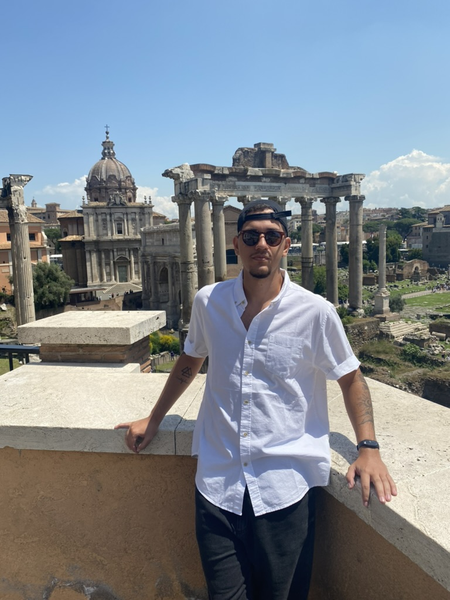

Oi, eu sou Matheus Fonseca,1 product designer do Rio.2 Cresci perto de gente que faz coisas.3 E acho que essa curiosidade nunca foi embora.4

1
Eu olho o e-mail o tempo todo. Também estou no LinkedIn e no X.
2
Sou do Rio de Janeiro, Brasil. Tive a chance de viajar para fora do país algumas vezes, e descobrir lugares novos virou uma das minhas coisas favoritas.
Culturas diferentes, arte, arquitetura, moda e as histórias por trás delas. Gosto de ver como as pessoas se expressam e o quanto dá para aprender além do que é familiar.
3
Minha mãe é artesã, então cresci vendo ela transformar materiais simples em algo completamente novo.
Acho que foi aí que começou meu fascínio por fazer coisas. Muito antes de saber o que era product design, eu já estava cercado de criatividade, experimentação e da ideia de que quase tudo podia ser feito de outro jeito.
4
Fora do trabalho, eu gosto de moda, videogame, mangá, carros (principalmente Honda) e quase tudo que chama minha atenção.
Também sou entusiasta de Web3. Gosto de explorar tecnologias emergentes e os jeitos diferentes que as pessoas encontram para construir em volta delas.
Acho que nunca fui muito bom em ficar só com um interesse.